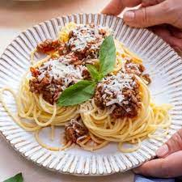

Spaghetti Bolognese

Ingredients:
- 1 lb ground beef
- 1 onion, finely chopped
- 2 cloves garlic, minced
- 1 carrot, grated
- 1 celery stalk, finely chopped
- 1 can (28 oz) crushed tomatoes
- 1/2 cup red wine (optional)
- 2 tablespoons tomato paste
- 1 teaspoon dried oregano
- 1 teaspoon dried basil
- Salt and pepper to taste
- 1/4 cup fresh parsley, chopped (for garnish)
- Grated Parmesan cheese (for serving)
- 1 lb spaghetti
Instructions:
- In a large pot, brown the ground beef over medium-high heat. Drain excess fat if necessary.
- Add chopped onions, minced garlic, grated carrot, and chopped celery to the pot. Sauté until the vegetables are softened.
- Pour in the crushed tomatoes and red wine (if using). Stir in tomato paste, dried oregano, dried basil, salt, and pepper.
- Simmer the sauce over low heat for at least 30 minutes to allow the flavors to meld.
- Cook the spaghetti according to package instructions. Drain and set aside.
- Serve the Bolognese sauce over the cooked spaghetti.
- Garnish with fresh parsley and serve with grated Parmesan cheese on the side.
- Enjoy your hearty and delicious Spaghetti Bolognese!